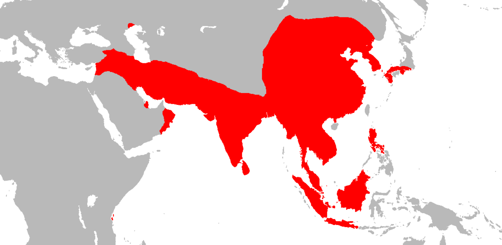
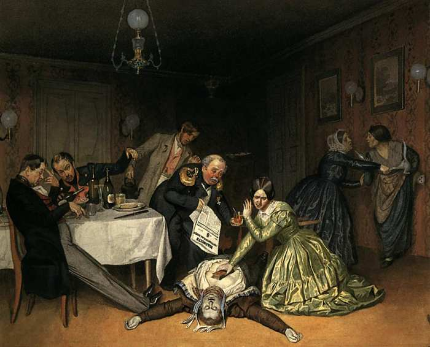
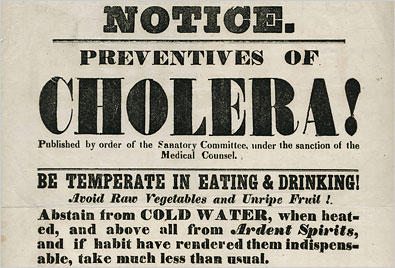

영국이 일으키고 세계가 피해를 본 판데믹 - 콜레라 이야기
게시: 2020-03-12T06:30:14+09:00
최근에 누가 '이 코로나-19가 언제까지 이어질지, 인류 역사상 과거에도 이런 전염병이 이렇게 전세계적으로 퍼진 적이 있었는지' 묻길래 최근 나폴레옹의 1812년 러시아 원정 당시 티푸스 관련 조사를 하다가 읽은 콜레라 이야기를 해줬습니다. 꽤 재미있게 듣길래 아예 여기에다 그냥 정리했습니다. 원래 콜레라는 인도 갠지즈 강 유역이 원산지(?)라고 알려져 있는데 유럽에 최초로 알려진 것은 1642년 동인도 제도에서 이 병을 본 네덜란드 동인도회사 소속 의사 카리브 드 본트(Jakob de Bondt)가 자신의 'De medicina Indorum' (인도 의학기)라는 책에 기록한 것이 최초입니다. 콜레라라는 이름은 담즙, 분노 등을 뜻하는 그리스어 χολή (kholē)에서 유래한 것이고 힌두어에서 따온 것은 아닙니다. 콜레라는 증상이... 더럽습니다. 에드워드 노튼과 나오미 와츠가 주연한 2006년 작 'The Painted Veil'이라는 영화는 20세기 초반 콜레라가 발생한 중국의 어느 산골 마을을 배경으로 합니다. 영화 속에서, 이 병에 걸리면 그냥 죽어라고 설사를 하다가 결국 말라 죽습니다. 즉 콜레라의 주요 증상은 다량의 묽은 설사, 구토, 근육 경련인데, 지나친 설사로 탈수가 오고, 그로 인한 전해질 불균형으로 사망까지 이르는 정말 인간의 존엄성이라고는 1도 없는 아주 고약한 병입니다. 링거 주사로 수액을 계속 공급해주면 살 수 있는데, 그게 개발된지가 그리 오래 되지 않은 것이지요.
콜레라는 세계사에 3번에 걸쳐 엄청난 판데믹을 일으킨 것으로 유명합니다. 전에도 언급한 바 있었지만, 나폴레옹이 1812년 러시아 침공 당시에는 아직 콜레라가 유럽에 상륙하기 전이었기에 망정이지, 그때 콜레라가 있었다면 나폴레옹은 절대 모스크바까지 가지도 못했을 것입니다. 그 전에 프랑스군이 다 죽었을테니까요.
(이렇게 보면 아주 낭만적인 영화 같지만... 가운데 구멍이 뚫리고 그 밑에는 대야가 놓인 침상들이 가득찬 병원 씬은...아 정말...)
제1차 콜레라 판데믹(pandemic)은 인도 벵갈 지역에서 시작하여 1817년 ~ 1824년 기간 중에 동남아와 중동, 아프리카 동부까지 퍼졌습니다. 원래 수백년간 갠지즈 강 유역에서만 조용히(?) 유행하던 풍토병인 콜레라가 이렇게 넓은 지역으로 번진 것은 신천지 못지 않은 역마살이 낀 영국인들이 그 지역에 진출했기 때문이었습니다. 인도에 주둔한 영국 육군, 그리고 아프리카 남단 희망봉을 돌아 인도와 영국을 오가던 영국 해군 함정 및 동인도회사 상선들의 광범위하고도 잦은 이동이 주요 원인이었습니다. 특히 이들은 중국부터 아라비아까지 아시아 일대에 교역항을 만들고 인도를 중심으로 교역 네트웍을 구축해놓고 있어서 아주 효과적으로 전염병을 퍼뜨렸습니다. 1821년에는 중국에, 1822년에는 일본까지 콜레라가 상륙했지요. 이렇게 유행하던 콜레라는 1824년 초에 수그러들었습니다. 이유는 확실히 모르지만, 특히 추웠던 1823~24년의 겨울 날씨 때문에 콜레라 박테리아가 활동을 제대로 못한 것 아닐까 추측한다고 합니다.

(제1차 콜레라 판데믹에 노출되었던 지역입니다.)
유럽에 콜레라가 본격 상륙한 것은 1829–1837년의 제2차 콜레라 판데믹 때였습니다. 제1차 판데믹이 잠잠해진 뒤 5년 만에 다시 시작된 콜레라 창궐이 유럽까지 번진 것은 당연히 영국 해군 또는 영국 상선에 의한 것이라고 생각들 하시겠지만 아니었습니다. 제1차 상륙 지점은 러시아였고, 러시아를 통해 유럽에 번졌습니다. 영국은 인도가 아니라 발트 해 연안에서 들어온 선박으로부터 콜레라를 수입했습니다. 러시아를 찍고 독일에 번진 콜레라가 결국 가야할 곳인 영국으로 향한 것이었지요. 제1차 판데믹 이후 쉬지 않고 서진하고 있던 콜레라는 아프가니스탄을 찍고 페르시아(이란)를 거쳐 우랄 산맥 남쪽 지방인 오렌부르그(Orenburg)를 필두로 1829년 러시아 침공을 시작했습니다. 콜레라는 나폴레옹과는 달리 거침없이 러시아를 가로질러 모스크바에는 1년 만인 1830년에 도달했습니다. 콜레라는 러시아에서 10만의 사망자를 냈습니다. 그리고 때마침 1831년 폴란드 바르샤바에서 독립을 위한 봉기가 일어나면서 그 진압을 위해 러시아 군대가 폴란드로 쏟아져 들어갔고, 그에 밀려난 폴란드인들이 프로이센으로 탈출하면서 독일 땅도 대거 콜레라의 침공을 받았습니다. 독일에서도 러시아에 '괴질'이 돌고 있다는 것을 알고 있었기 때문에 서둘러 국경을 봉쇄했지만, 아무 소용 없었습니다. 넓은 국경을 일일이 막을 방법도 없었고, 평소 교역을 생계로 하던 사람들에게는 괴질보다는 당장 굶는 것이 더 무서운 일이었니까요. 헝가리에서도 10만 정도가 콜레라로 목숨을 잃었습니다.
(1831년 폴란드 봉기 때 의용군을 일으켜 러시아에 저항했던 폴란드 계통의 리투아니아 귀족 여성 에밀리아 플라터(Emilia Plater)입니다. 사실 이 분은 뾰족한 전과는 없었으나 반란군 주력부대가 프로이센으로 탈출할 때도 그에 반대하고 끝까지 남아 항전을 주장했습니다. 그러나 불행히도 이 귀족 여성은 곧 병에 걸려 25세의 꽃다운 나이에 사망해버렸습니다. 일설에는 다른 반란군들의 배신에 마음의 상처가 깊어 병이 걸렸다고도 하고, 일설에는 부상을 당해 그로 인해 앓다가 죽었다고도 하는데, 병명은 알려진 바가 없습니다. 혹시 이 분이 걸렸다는 정체불명의 병이 콜레라 아닐까 하는 생각도 해봤는데, 그랬다는 증거는 없습니다. 실제로 콜레라였다면 측근들이 감출 만도 합니다. 너무 끔찍하고 인간 존엄성을 떨어뜨리는 병이거든요.)
(판데믹은 반드시 사회 혼란과 소요를 동반합니다. 그림은 1831년 상트-페체르부르그에서 일어난 콜레라 폭동 때 짜르 니콜라이 1세가 폭동을 덕으로서 진정시키는 모습입니다. 실제로는 포병대까지 동원한 정규군의 무자비한 진압으로 진정되었습니다. 이런 콜레라 폭동은 영국에서도 일어났습니다.)
이 모든 난리의 근본적 원흉인 영국이 콜레라의 침공을 받는데는 1년 정도가 더 걸렸습니다. 1831년 12월, 잉글랜드 북동부의 항구 도시인 선더랜드(Sunderland)에 콜레라가 상륙했는데 아마도 발트 해 연안 항구에서 온 승객들 중 일부가 콜레라를 가지고 온 것으로 추정되었습니다. 곧 이 끔찍한 병은 런던에 입성하여 6~7천 명의 사망자를 냈습니다. 영국 전체에서는 약 5만5천의 사망자가 났고, 프랑스에서는 10만 정도의 사망자를 냈습니다. 파리 같은 경우는 당시 인구가 65만 정도였는데 무려 2만의 사망자를 냈습니다. 다음 해인 1832년 드디어 콜레라는 대서양을 넘어 캐나다와 미국에도 상륙했습니다. 뉴욕에 상륙한 콜레라가 미국 서부 태평양 해안 도시에 닿는데는 1년 정도 밖에 걸리지 않았습니다. 제3차 콜레라 판데믹은 특히 길어서 1846~1860년의 무려 14년 간이나 지속되었습니다. 러시아에서는 이 기간 중에 약 1백만 명이 목숨을 잃었다고 추정되고, 영국에서도 1848년부터 1850년까지 딱 2년 사이에만 5만이 넘는 사망자를 냈습니다. 런던에서만도 1만5천 정도가 죽었고요. 엎친데 덮친다고, 이미 대기근으로 쇠약해져 있던 아일랜드라고 콜레라는 피해가지 않았습니다. 다만 아일랜드에서는 사람이 죽었을 때 콜레라로 죽은 것인지 굶어죽은 것인지 구분을 못했지요. 뉴욕과 세인트 루이스, 뉴오올리언즈 등 미국 대도시에서도 각각 수천명의 사망자를 냈고, 미국 전체로 치면 약 15만 명의 희생자가 난 것으로 추정됩니다. 멕시코에서는 20만명 정도가 이 병으로 사망했다고 합니다.

(제3차 판데믹 때 콜레라로 쓰러진 사람의 모습입니다. 러시아 화가 페도프(Pavel Andreyevich Fedotov)의 그림입니다. 쓰러진 분의 얼굴이 푸르스름한 것은 심한 탈수로 인한 대표적인 증상입니다. 다만 너무 통통하신 것이 현실과는 맞지 않네요.)
1850년대에도 콜레라는 지칠 줄 모르고 사람을 잡아먹었습니다. 1853~1854년 사이에 런던에서만 1만이 넘게 사망했고 1854~1855년 딱 2년 동안 스페인에서는 23만 넘는 사람들이 죽었습니다. 같은 기간 남미에서도 콜레라가 상륙했습니다. 북아프리카의 튀니지는 제1, 2차 판데믹에서는 운 좋게도 피해를 입지 않았는데 결국 이때 큰 타격을 받았습니다. 튀니지 사람들은 유럽 기독교인들이 이 병을 옮겨왔다고 원성과 증오가 자자했습니다.

(1850년대 미국에서 발행된 경고문입니다. 콜레라를 예방하기 위해서는 더워도 찬물을 마시지 말고 특히 럼이나 위스키 같은 독한 증류주를 마시지 말라고 되어 있습니다. 또 익히지 않은 채소와 덜 익은 과일도 먹지 말라고 되어 있네요. 일부는 맞고 일부는 틀린 처방인데, 결국 병의 원인을 모르기 때문에 저런 엉터리 경고가 나붙은 것입니다.)
콜레라가 이렇게 승승장구했던 것은 당시 사람들은 세균이라는 것 자체를 몰랐기 때문이었습니다. 당시에도 전염병의 개념은 있었지만, 병을 전염시키는 것은 '나쁜 공기' 내지는 '나쁜 기운'이라는 뜻의 미아즈마(miasma)라는 존재라고 막연하게 생각하고 있었습니다. 많은 전염병이 물 속의 미생물에 의해 전염된다는 사실은 상상조차 하지 못했고, 따라서 물을 끓여마시기만 해도 이질 설사는 물론 많은 전염병을 예방할 수 있다는 사실을 몰랐습니다. 그런 상황 속에서, 콜레라에 걸린 사람들은 많은 양의 설사를 계속 생산했고, 콜레라 균이 가득찬 그 오물은 강이나 호수, 특히 지하수를 통해 우물을 오염시켰습니다. 그 물을 마신 사람들은 다시 콜레라에 걸리고, 그래서 다시 설사를... 이런 악순환이 계속 되었던 것입니다. 여기에 최초로 제동이 걸린 것은 1854년 존 스노우(John Snow)라는 런던 의사에 의해서였습니다. 그는 최초로 콜레라는 물에 의해 전염되며 이는 사람이 마시는 물이 환자의 분변 속에 존재하는 미생물로 인해 오염되기 때문이라고 밝혔습니다. 존 스노우는 콜레라가 발생한 런던 시내 가옥들의 위치를 통계학적으로 분석하여 그 중심에 어떤 우물이 있다는 사실을 발견함으로써 그 이론을 세웠습니다. 다만 그 이론을 화학 실험이나 현미경으로 그를 증명하지는 못했고, 그 때문인지 당시 대부분의 의사들과 학자들은 존 스노우의 발표를 믿지 않았다고 합니다. 그럼에도 불구하고 존 스노우의 주장에 따라 그 문제의 우물을 폐쇄하자, 놀랍게도 콜레라의 확산이 중단되어 그의 이론이 어느 정도 인정되었습니다. 실제로 질병이 미생물에 의해 전염된다는 것은 1860년대에 들어서야 파스퇴르의 연구에 의해 입증되었습니다.
(이 펌프가 존 스노우의 발견의 실마리가 된 우물의 펌프입니다. 존 스노우의 발견을 기념하여 아직도 보존되고 있다고 합니다.) 우리나라에도 콜레라는 괴질이라는 이름으로 1821년 순조 때 상륙하여 단 열흘 동안 1천명이 사망하는 참극을 내는 등 수만 명의 희생자를 냈습니다. 이후에도 콜레라는 없어지지 않고 계속 재발하여 1858년에는 50여만 명의 희생자를 냈고, 1866년, 1895년에도 다시 수만 명이 죽었습니다. 다들 아시다시피 우리나라는 서양은 물론 중국이나 일본과도 엄격히 제한된 무역만을 하는 등 인적 교류가 극히 제한된 사실상 봉쇄 국가였습니다. 그런데도 콜레라 판데믹을 피해가지는 못했습니다. 전염병 방역을 위해 국경을 봉쇄하는 것은 시간을 조금 더 끌 뿐, 결코 근본적인 해결책이 아니라고 전세계 방역 전문가들이 입을 모아 이야기하는 것은 다 이유가 있기 때문입니다.
근본적인 해결책은 결국 백신과 사회적 위생 시설, 의료 역량의 강화, 그리고 무엇보다도 시민 보건 교육 강화에 따른 개인 위생입니다. 우리나라만 해도 아직도 화장실 사용 후 손 안씻는 분의 비율이 깜짝 놀랄 정도로 높습니다. 그리고 세계 방역 전문가들이 '마스크 쓸 필요없다'라고 아무리 떠들어도 아무 소용이 없고 전세계 사람들이 마스크를 찾고 있지요. 선진국이라는 구미 국가들에서는 한술 더 떠 휴지와 페이퍼 타월까지 동이 나고 있다지요. 물론 환자를 돌보고 있다든가 밀폐된 만원 지하철을 타는 경우에는 마스크를 써야 할 것 같습니다만, 길거리를 걷는데도 다들 마스크를 쓰고 다니는 것을 보면 이건 좀 과한 것이 아닐까 싶습니다. 정치인들이며 공무원들이 일반 도로나 건물 외벽에 소독제를 뿌리는 것도 이상하고요. 제대로 된 보건 지식은 많은 생명을 구할 수 있습니다. 전에 만쭈리님의 블로그(https://m.blog.naver.com/alsn76/40205924401) 에서 읽은 내용이 기억에 남습니다. 구한말 한양에 콜레라가 돌아 수많은 사람들이 죽어나갈 때에 한양 사는 서양인들과 일본인들은 아무도 죽지 않았는데, 그 이유가 그들은 물을 끓여마시면 괜찮다는 것을 알았기 때문이었답니다. 그런데 알고 보면, 서양인들도 그 사실을 고작 20~30년 전에야 알게 된 것이었지요. 콜레라 백신이 개발된 현대에도 콜레라는 전세계적으로 한 해에 3~5백만명을 감염시키고 약 10만 가량의 사망자를 내는 무서운 병입니다. 코로나-19가 그 정도로 무서운 병은 아니겠지만, 언제까지나 인류와 함께 하는 병이 될까 그것이 두렵긴 합니다.
Source : https://en.wikipedia.org/wiki/Cholera https://en.wikipedia.org/wiki/Cholera_outbreaks_and_pandemics https://en.wikipedia.org/wiki/1826%E2%80%931837_cholera_pandemic https://en.wikipedia.org/wiki/Jacobus_Bontius https://en.wikipedia.org/wiki/Cholera_Riots http://blog.daum.net/cordblood/13735754